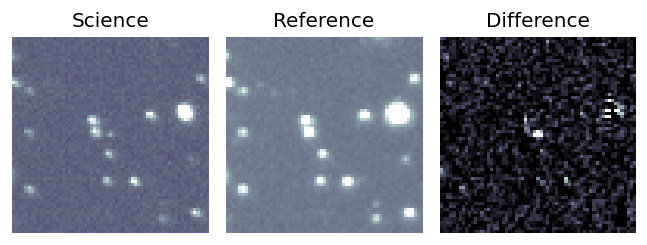
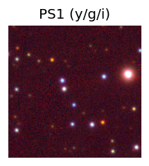
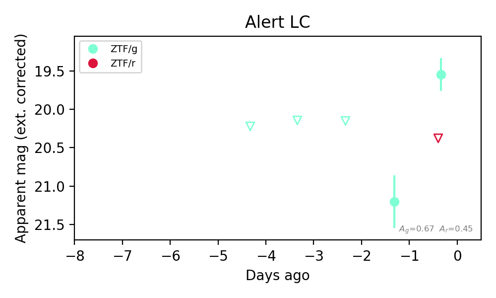
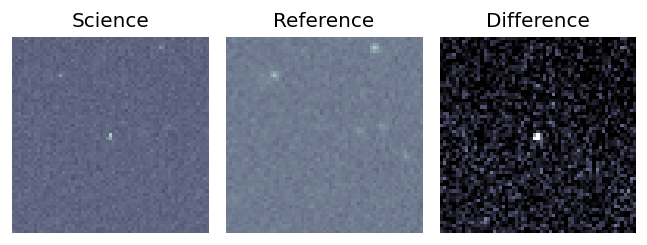
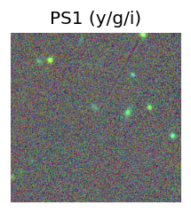
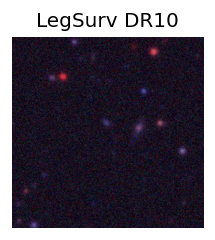
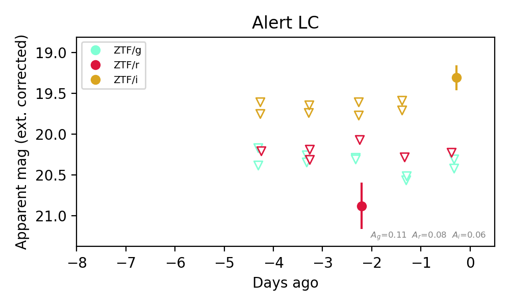

Candidate List 20260914Last night — ZTF: 3,273 passed basic cuts (62 young) · LSST: 0 passed basic cuts (0 young)Previous Day Next Day
Section 1: New Sources (age<1d) Section 2: Old (1-5d) sources observed last nightplaceholder
Section 1: New Afterglow/FBOT Cands Last Night (0)
Section 2: Older Sources Observed Last Night (9)
0. [ZTF] ZTF26abswzfk (FBOT?) [Back to Top] [Share] [Trigger Swift] [Fritz Alert] [Fritz Source] [Lasair]RA, Dec: 294.46682, 64.80915 19h37m52.04s, 64d48m32.92sGalactic (l, b): 96.65353, 19.65767 ext(g-r) = 0.123


TESS: Sectors [ 14 15 17 18 19 20 21 22 23 24 25 26 40 41 47 48 49 50
51 52 53 54 55 56 57 58 59 60 73 74 75 76 77 78 79 80
81 82 83 84 85 86 117 118 119 120 121]
PS1: 0 sources in 3 arcsec
LegacySurvey: 1 sources in 3 arcsec Closest: d = 0.33 arcsec, 325.8 deg (east of north) photoz=0.12 (68% bounds 0.1, 0.13), type=SER peak abs mag (ext. corrected) = -19.66 (68% bounds -19.28, -19.97)

Extinction-corrected gr color:
From alerts: 0.1 +/- 0.21 mag
Consistent with synchrotron, g-r>0!
Rise Rate:
g: 0.25 mag/day
r: 0.19 mag/day
Fade Rate:
1. [ZTF] ZTF26abtijze (FBOT?) [Back to Top] [Share] [Trigger Swift] [Fritz Alert] [Fritz Source] [Lasair]RA, Dec: 352.20664, 25.59287 23h28m49.59s, 25d35m34.33sGalactic (l, b): 100.46637, -33.64953 ext(g-r) = 0.07


TESS: Sectors [56 83]
PS1: 0 sources in 3 arcsec
LegacySurvey: 1 sources in 3 arcsec Closest: d = 0.54 arcsec, 124.0 deg (east of north) photoz=0.9 (68% bounds 0.72, 1.07), type=REX peak abs mag (ext. corrected) = -24.38 (68% bounds -23.79, -24.83)

Extinction-corrected gr color:
From alerts: -0.16 +/- 0.17 mag
Consistent with synchrotron, g-r>0!
Rise Rate:
g: 0.29 mag/day
r: 0.33 mag/day
Fade Rate:
2. [ZTF] ZTF26abttgxn (Afterglow?) [Back to Top] [Share] [Trigger Swift] [Fritz Alert] [Fritz Source] [Lasair]RA, Dec: 19.0427, 16.15181 1h16m10.25s, 16d 9m6.51sGalactic (l, b): 131.54506, -46.3059 ext(g-r) = 0.132


TESS: Sectors [17 42 43 57 70]
SDSS (<15 kpc):Found SDSS phot-z: z=0.08; peak abs mag = -18.65
PS1: 0 sources in 3 arcsec
LegacySurvey: 1 sources in 3 arcsec Closest: d = 9.21 arcsec, 11.3 deg (east of north) photoz=0.11 (68% bounds 0.09, 0.15), type=REX peak abs mag (ext. corrected) = -19.33 (68% bounds -18.93, -20.15)

Extinction-corrected gr color:
From alerts: 0.8 +/- 99 mag
Extinction-corrected gi color:
From alerts: -0.07 +/- 0.19 mag
Extinction-corrected ri color:
From alerts: 0.2 +/- 0.23 mag
Consistent with synchrotron, g-r>0!
Rise Rate:
g: 1.25 mag/day
r: 0.3 mag/day
i: 0.27 mag/day
Fade Rate:
3. [ZTF] ZTF26abthpmr (FBOT?) [Back to Top] [Share] [Trigger Swift] [Fritz Alert] [Fritz Source] [Lasair]RA, Dec: 346.10758, 35.40859 23h 4m25.82s, 35d24m30.93sGalactic (l, b): 99.5254, -22.55293 ext(g-r) = 0.082


TESS: Sectors [16 56 83]
PS1: 1 source in 3 arcsec Closest: d = 1.64 arcsec photoz=0.53+/-0.09 peak abs mag = -23.65
LegacySurvey: 0 sources in 3 arcsec

Extinction-corrected gr color:
From alerts: -0.43 +/- 0.11 mag
Rise Rate:
g: 0.88 mag/day
r: 0.57 mag/day
Fade Rate:
4. [ZTF] ZTF26abtqfyy (FBOT?) [Back to Top] [Share] [Trigger Swift] [Fritz Alert] [Fritz Source] [Lasair]RA, Dec: 342.96099, 16.02355 22h51m50.64s, 16d 1m24.77sGalactic (l, b): 85.48641, -38.00262 ext(g-r) = 0.075


TESS: Sectors [56 83]
SDSS (<15 kpc):Found SDSS phot-z: z=0.20; peak abs mag = -20.09
PS1: 0 sources in 3 arcsec
LegacySurvey: 1 sources in 3 arcsec Closest: d = 0.24 arcsec, 226.7 deg (east of north) photoz=0.17 (68% bounds 0.12, 0.27), type=DEV peak abs mag (ext. corrected) = -19.7 (68% bounds -18.92, -20.89)

Extinction-corrected gr color:
From alerts: -0.28 +/- 0.24 mag
Rise Rate:
g: 0.24 mag/day
r: 0.16 mag/day
Fade Rate:
5. [ZTF] ZTF26abujyic (FBOT?) [Back to Top] [Share] [Trigger Swift] [Fritz Alert] [Fritz Source] [Lasair]RA, Dec: 261.62898, 23.26363 17h26m30.96s, 23d15m49.08sGalactic (l, b): 46.06603, 28.43602 ext(g-r) = 0.062


TESS: Sectors [ 25 26 52 53 79 117 118]
PS1: 0 sources in 3 arcsec
LegacySurvey: 1 sources in 3 arcsec Closest: d = 0.78 arcsec, 159.9 deg (east of north) photoz=0.14 (68% bounds 0.11, 0.17), type=SER peak abs mag (ext. corrected) = -19.67 (68% bounds -19.21, -20.11)

Extinction-corrected gr color:
From alerts: -0.16 +/- 0.23 mag
Consistent with synchrotron, g-r>0!
Rise Rate:
g: 0.13 mag/day
r: 0.21 mag/day
Fade Rate:
6. [ZTF] ZTF26abukalo (FBOT?) [Back to Top] [Share] [Trigger Swift] [Fritz Alert] [Fritz Source] [Lasair]RA, Dec: 281.25884, 32.94379 18h45m2.12s, 32d56m37.63sGalactic (l, b): 62.36395, 15.59488 ext(g-r) = 0.08


TESS: Sectors [ 26 53 54 74 80 81 118 119]
PS1: 1 source in 3 arcsec Closest: d = 5.93 arcsec photoz=0.87+/-0.09 peak abs mag = -24.05
LegacySurvey: 0 sources in 3 arcsec

Extinction-corrected gr color:
From alerts: -0.2 +/- 0.23 mag
Consistent with synchrotron, g-r>0!
Rise Rate:
g: 0.3 mag/day
r: 0.34 mag/day
Fade Rate:
7. [ZTF] ZTF26abuntrx (FBOT?) [Back to Top] [Share] [Trigger Swift] [Fritz Alert] [Fritz Source] [Lasair]RA, Dec: 333.6024, 47.18039 22h14m24.58s, 47d10m49.39sGalactic (l, b): 97.20894, -7.69698 ext(g-r) = 0.214


TESS: Sectors [ 56 57 76 77 83 84 121]
PS1: 1 source in 3 arcsec Closest: d = 5.16 arcsec photoz=0.48+/-0.08 peak abs mag = -22.69
LegacySurvey: 0 sources in 3 arcsec

Extinction-corrected gr color:
From alerts: -0.83 +/- 99 mag
Rise Rate:
g: 1.7 mag/day
Fade Rate:
8. [ZTF] ZTF26abupqrm (FBOT?) [Back to Top] [Share] [Trigger Swift] [Fritz Alert] [Fritz Source] [Lasair]RA, Dec: 349.05012, -6.34403 23h16m12.03s, -6d-20m-38.50sGalactic (l, b): 71.18032, -59.2766 WARNING: -1.51 deg from ecliptic plane ext(g-r) = 0.036


TESS: Sectors [42 70 92]
SDSS (<15 kpc):Found SDSS phot-z: z=0.94; peak abs mag = -24.68
PS1: 0 sources in 3 arcsec
LegacySurvey: 1 sources in 3 arcsec Closest: d = 3.35 arcsec, 8.5 deg (east of north) photoz=0.28 (68% bounds 0.21, 0.42), type=EXP peak abs mag (ext. corrected) = -21.57 (68% bounds -20.83, -22.57)

Extinction-corrected gr color:
From alerts: -0.58 +/- 99 mag
Extinction-corrected gi color:
From alerts: 1.11 +/- 99 mag
Extinction-corrected ri color:
From alerts: 0.92 +/- 99 mag
Rise Rate:
i: 0.36 mag/day
Fade Rate: